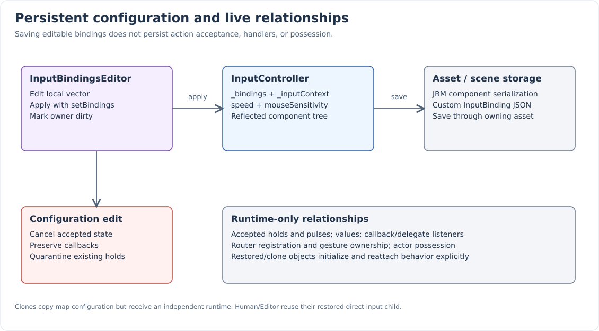
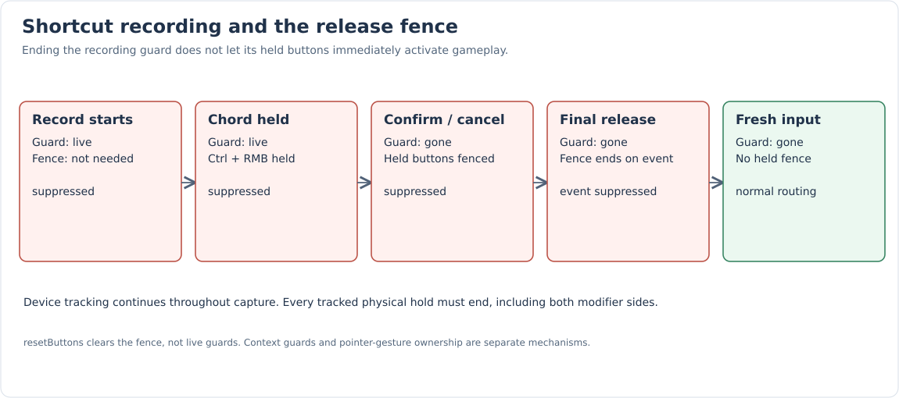

Serialization and the Binding Editor
Binding configuration is persistent. Accepted presses, action pulses, callbacks, router ownership, and actor possession are runtime relationships. Editing or restoring configuration invalidates old action state rather than reinterpreting a held key under a new binding.
What is saved and copied
| State | Serialized | Copied to clone | Notes |
|---|---|---|---|
Binding vector |
Yes |
Yes |
Reflected legacy field name |
Input context |
Yes |
Yes |
Reflected |
speed / mouseSensitivity |
Yes |
Yes |
Defaults 600 / 0.5; consumer settings, not core input scaling. |
Explicit input-enabled flag |
No |
Yes |
Set through setInputEnabled; distinct from reflected BaseComponent state. |
Accepted/held/transient actions |
No |
No |
A fresh runtime starts inactive. |
Action callbacks / delegate listeners |
No |
No |
Reinstall behavior during initialization. |
Router registration / gesture ownership / blocked buttons |
No |
No |
Established by live lifecycle/routing. |
Possessed Actor |
No |
No |
GameController restores possession explicitly at runtime. |
BaseComponent’s own serialized fields/child tree remain governed by the component
serialization contract. InputMap is a configuration value, not a separate ECS asset type.
getInputMap() returns a copy; setInputMap() copies its bindings into the component.

Binding JSON contract
The custom to_json/from_json adapters for InputBinding live in InputMap.cpp.
They preserve the keyboard-oriented legacy shape while adding mouse and pointer sources.
| Field | Representation |
|---|---|
action |
StringAtom’s JSON name; interned on input. |
triggerKey |
Keyboard enum name as a string, or an object with device = Mouse and button = the mouse enum name. |
requiredKeys |
Array of the same keyboard-string/mouse-object button representations. |
trigger |
OnPress, WhileHeld, or OnRelease string. |
source |
Omitted for Button; PointerMove or Wheel for nonbutton bindings. |
These are binding-adapter fields, not a complete scene/asset wrapper schema. The following test round-trips a binding and checks its actual serialized placement:
TEST_F(InputControllerTests, BindingSerializationPreservesChordAndTrigger)
{
const InputController::Binding binding{ .action = "Save"_atom,
.chord = { .triggerKey = Key::S,
.requiredKeys = { Key::Left_Control } },
.trigger = InputActionTrigger::OnRelease };
const nlohmann::json json = binding;
const auto restored = json.get<InputController::Binding>();
EXPECT_EQ(restored.action, binding.action);
EXPECT_EQ(restored.chord.triggerKey, Key::S);
EXPECT_EQ(restored.chord.requiredKeys, binding.chord.requiredKeys);
EXPECT_EQ(restored.trigger, binding.trigger);
auto controller = InputController::Create("Game"_atom, InputContext::Gameplay);
controller->setBindings({ restored });
EXPECT_TRUE(controller->getTags() & Tag_InputController);
EXPECT_EQ(TagHelper::ToTag("InputController"), Tag_InputController);
EXPECT_EQ(controller->serialize()["_bindings"][0], json);
}Compatibility on read
The adapter accepts:
-
triggerKey, falling back to the olderkeyfield if triggerKey is absent. -
Keyboard names and older integer keyboard codes.
-
Mouse objects with a recognized Mouse device/button name.
-
Legacy
requiredModifiersbits, converted into required Left Control, Shift, Alt, and Super keys, without duplicating identical stored physical keys.
Source defaults to Button. Unrecognized source strings remain Button. Trigger defaults to OnPress; unrecognized trigger strings also become OnPress. Unrecognized buttons are ignored, leaving an absent trigger as None. Button entries with None triggers remain editable but cannot resolve.
This is not a promise that arbitrary malformed JSON is accepted: incorrect field types can still cause JSON conversion errors. Loading is compatibility handling, not a general migration/error-repair framework.
TEST_F(InputControllerTests, MouseSupportPreservesLegacyKeyboardSerialization)
{
const nlohmann::json legacy{
{ "action", "Save" },
{ "key", static_cast<int>(Key::S) },
{ "requiredKeys", { "Left_Shift", static_cast<int>(Key::Left_Alt) } },
{ "requiredModifiers", static_cast<int>(InputModifier::Control) }
};
const auto restored = legacy.get<InputController::Binding>();
EXPECT_EQ(restored.action, "Save"_atom);
EXPECT_EQ(restored.chord.triggerKey, Key::S);
EXPECT_EQ(restored.chord.requiredKeys,
(std::vector<InputButton>{ Key::Left_Shift, Key::Left_Alt, Key::Left_Control }));
EXPECT_EQ(restored.trigger, InputActionTrigger::OnPress);
const nlohmann::json serialized = restored;
EXPECT_EQ(serialized["triggerKey"], "S");
EXPECT_EQ(serialized["requiredKeys"],
(nlohmann::json::array({ "Left_Shift", "Left_Alt", "Left_Control" })));
}Re-saving uses the current adapter representation. Legacy modifier bits become regular required keys.
Mutation and runtime invalidation
| Operation | Runtime effect |
|---|---|
Valid bind, including replacement |
Cancel all current action state and refresh routing. |
Invalid bind |
Return false without changing configuration or runtime. |
unbind when an action exists |
Remove all its entries, cancel all runtime state, refresh. |
unbind when absent |
Return false without cancellation. |
clearBindings |
Cancel, clear vector, refresh; handlers remain. |
setBindings / setInputMap |
Copy vector, cancel all runtime state, refresh, preserve handlers. |
Different input context |
Cancel all state and refresh in the new context. |
Same input context |
No change. |
Changed explicit input-enabled flag |
Cancel and refresh. |
Same explicit input-enabled flag |
No change. |
setActionCallback |
Change the handler independently; do not replace bindings. |
Post-deserialization |
Cancel stale state and refresh routing. |
Even setBindings(getBindings()) cancels accepted holds. Its local copy makes
self-aliasing safe, but equality is not checked to preserve active state.
TEST_F(InputControllerTests, EditingBindingsPreservesCallbacksAndResetsHeldState)
{
auto controller = InputController::Create("Game"_atom, InputContext::Gameplay);
int calls = 0;
controller->bind(
"Move"_atom, KeyChord::Exact(Key::W), [&](const InputActionEvent&) { ++calls; },
InputActionTrigger::WhileHeld);
key(Key::W, State::Pressed);
frame();
EXPECT_EQ(calls, 1);
controller->setBindings(controller->getBindings());
EXPECT_FALSE(controller->isActive("Move"_atom));
ASSERT_EQ(controller->getBindings().size(), 1);
key(Key::W, State::Released);
key(Key::W, State::Pressed);
frame();
EXPECT_EQ(calls, 2);
}Already-held non-modifier buttons are quarantined after refresh. Release them and press again to test a new binding. No OnRelease callback is manufactured by the edit.
Sharing maps safely
The same InputMap can initialize several components. Configuration is copied; active state is independent:
TEST_F(InputControllerTests, ReusedInputMapDoesNotShareRuntimeState)
{
InputMap map;
map.bind({ .action = "Move"_atom,
.chord = KeyChord::Exact(Key::W),
.trigger = InputActionTrigger::WhileHeld });
auto first = InputController::Create("First"_atom, InputContext::Gameplay);
auto second = InputController::Create("Second"_atom, InputContext::Gameplay);
first->setInputMap(map);
second->setInputMap(map);
key(Key::W, State::Pressed);
frame();
EXPECT_TRUE(first->isActive("Move"_atom));
EXPECT_TRUE(second->isActive("Move"_atom));
first->clearBindings();
EXPECT_FALSE(first->isActive("Move"_atom));
EXPECT_TRUE(second->isActive("Move"_atom));
EXPECT_EQ(map.getBindings().size(), 1);
}Editing a returned map copy does not update a component until setInputMap/setBindings is called. A const reference from getBindings should be treated as a view whose contents can be invalidated by a later configuration change; copy it for editing.
Opening the editor
The ECS InputController adapter shows an Input shortcuts section and an Edit shortcuts button. That opens InputBindingsEditor for the selected input component. The editor presents a binding list and settings for action name, recorded chord, and trigger. Add creates a named Button entry with a None trigger; it becomes usable after a valid chord is supplied. Delete removes the selected vector entry.
Edits apply through setBindings and mark the owning asset editor dirty. This means editing live bindings also resets their action runtime. The current settings widget is not a general editor for PointerMove/Wheel source selection or all input-device features.
Action renaming does not rename callback registrations. Handlers are keyed by the original action atom; the renamed action needs a corresponding handler/consumer. Temporarily removing a binding does not erase its old callback.
Save and target lifetime
InputBindingsEditor tracks the target component and owner weakly, and retains the target asset when opened from an asset editor. If the original window closes but the retained asset still owns the component, the bindings window can continue editing and save that asset directly.
If there is no retained valid asset and the owner/target no longer matches, the window clears its target. Switching targets, selection, or binding sessions cancels recording. Closing the bindings window clears target state.
Save routes through the matching asset editor when available, otherwise directly through the retained asset. Save is disabled during active recording capture, including its pending-release fence. Editing and saving are separate: a live setBindings update is not by itself a filesystem save.
Binding recording

The widget starts an InputCapture guard and subscribes to raw Platform keyboard, mouse, and focus events. Routed actions are suppressed, while the recorder sees buttons needed to build a chord.
Keyboard modifiers are normalized and recorded as requirements. The most recently recorded non-modifier/button becomes the trigger, with the other currently tracked buttons as requirements. Mouse presses are recorded only in the widget’s capture area, so clicking Confirm or Cancel is not interpreted as the intended mouse shortcut.
Confirm requires a non-None trigger and applies the recorded chord. Cancel leaves the existing chord unchanged. Focus loss requests cancellation, and invisible/closed recording UI releases its recording state/subscriptions.
When the guard ends, InputCapture’s shared release fence continues suppressing actions until all tracked held buttons are released. The final fence-clearing Release is suppressed too. This avoids immediately executing the shortcut just recorded or confirmed.
Focus loss/reset clears the held-button fence. A still-live capture guard keeps suppression active until it is destroyed.
Persistence and initialization rules
Use reflected configuration for editable state, and install behavior at runtime. Do not serialize lambdas, delegates, intrusive runtime registrations, or weak possession as binding configuration.
For defaults, preserve restored maps. The spectator’s empty-vector convention is one policy, not a universal serialization rule. Games needing versioned defaults or intentionally empty persisted maps should track that decision explicitly.
JRM-generated files update through CodeGenerator in the normal build. Source tags used by these docs are comments in the real source/tests; the Antora examples family links to those files instead of storing duplicate snippets.